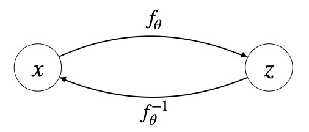
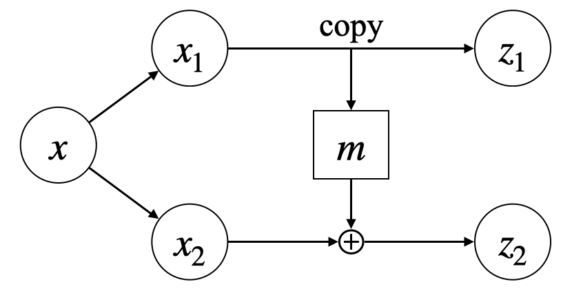
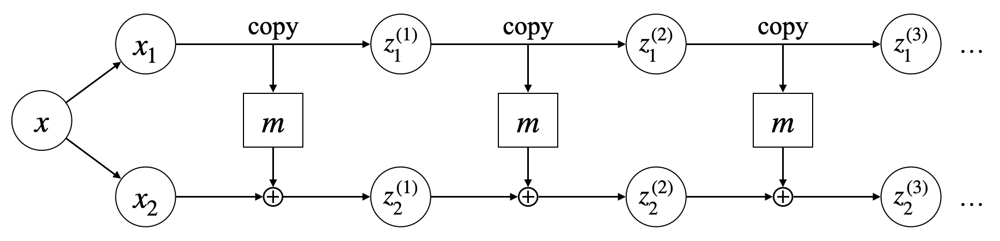
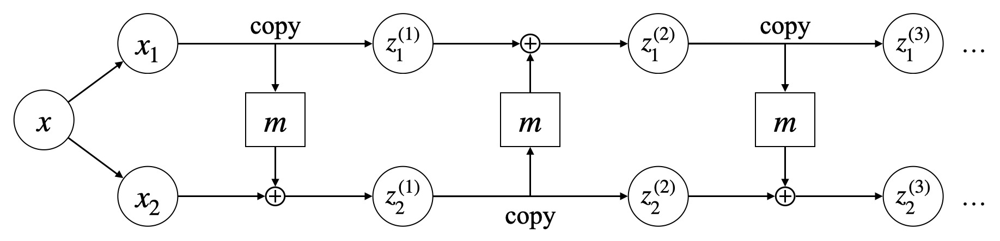

Flow-based Generative Models
封面图片来自链接。
Brief Introduction
生成模型的目标是最大化训练样本的对数似然 \(\mathbb E_{p_\text{data}(x)}[\log p_\theta(x)]\)，但直接计算对数似然是十分困难的。为此，各种生成模型想方设法地绕过似然的直接计算。例如，VAE 优化的是对数似然的一个下界；Score-based Models 建模的是对数似然的梯度场 (score function)；GANs 则通过对抗训练隐式地优化对数似然。与这些模型不同，Flow 模型通过巧妙设计网络架构，使之能够直接计算似然函数。
Flow 模型最早由 NICE[1]提出，后续由 Real-NVP[2]和 Glow[3]做出改进。值得一提的是，将 Flow 模型连续化可得到连续归一化流 CNF[4]. 由于 CNF 可以用 ODE 描述，因而能够与 Score-based Models 和 Diffusion Models 紧密联系在一起，代表工作有近年的 Rectified Flow[5]和 Flow Matching[6]等。不过本文的内容主要还是集中在 NICE、Real-NVP 和 Glow 上。
Change of Variables
Flow 模型希望构建一个可逆非线性变换 \(f_\theta\)，将输入 \(x\) 映射到 \(z\)，使得 \(p_Z(z)\) 是一个简单分布（例如标准高斯分布）：

根据概率论的知识，有变量替换公式 (change of variables)： \[ p_\theta(x)=p_Z(f_\theta(x))\left|\det\left(\frac{\partial f_\theta(x)}{\partial x}\right)\right| \] 其中 \(\det(\partial f_\theta(x)/\partial x)\) 表示 \(f_\theta\) 的 Jacobian 行列式。那么现在对数似然为： \[ \log p_\theta(x)=\log p_Z(f_\theta(x))+\log\left|\det\left(\frac{\partial f_\theta(x)}{\partial x}\right)\right| \] 因此，如果 Jacobian 行列式是容易计算的，那么对数似然就可以直接计算出来，从而可以优化求解 \(f_\theta\) 了。
进一步地，当训练完成后，由于 \(f_\theta\) 可逆，所以只需要通过简单的 ancestral sampling 就可以生成新的数据： \[ z\sim p(z),\quad x=f_\theta^{-1}(z) \] 因此，现在问题的关键就在于如何设计变换 \(f_\theta\)，使之满足：1. 可逆；2. Jacobian 行列式容易计算；3. 有足够强大的非线性变换能力。
NICE
NICE 的核心设计是 additive coupling layer. 首先将数据 \(x\) 划分为两部分 \(x_1\in\mathbb R^{d_1},x_2\in\mathbb R^{d_2}\)，然后定义 \(z=(z_1,z_2)\) 为： \[ \begin{align} &z_1=x_1\\ &z_2=m_\theta(x_1)+x_2 \end{align} \] 其中 \(m_\theta:\mathbb R^{d_1}\to\mathbb R^{d_1}\) 可以是任意复杂函数（如一个神经网络），如图所示：

在这样的设计下，可逆性非常容易满足： \[ \begin{align} &x_1=z_1\\ &x_2=z_2-m_\theta(z_1) \end{align} \] 而 Jacobian 行列式为： \[ \det\left(\frac{\partial (z_1,z_2)}{\partial (x_1,x_2)}\right)= \det\begin{pmatrix} \frac{\partial z_1}{\partial x_1}&\frac{\partial z_1}{\partial x_2}\\ \frac{\partial z_2}{\partial x_1}&\frac{\partial z_2}{\partial x_2} \end{pmatrix}= \det\begin{pmatrix} I_{d_1}&0\\ \frac{\partial{z_2}}{\partial x_1}&I_{d_2} \end{pmatrix}=1 \] 因此前两点要求都满足了。但一层 coupling layer 的复杂程度有限，特别是其中有一部分是直接复制的，因此我们考虑堆叠多层 coupling layers. 不过，直接堆叠将得到下面的结构：

可以看见，上面的分支始终是直接复制的前一层的，最终也没有发生过改变，这不是我们希望的。为此，只需要相邻两层交换上下分支就可以解决这个问题：

堆叠多层 coupling layers 显然并不改变可逆性，且 Jacobian 行列式也只是每一层 Jacobian 行列式的累乘： \[ \det\left(\frac{\partial(z_1^{(2)},z_2^{(2)})}{\partial(x_1,x_2)}\right)=\det\left(\frac{\partial(z_1^{(2)},z_2^{(2)})}{\partial(z_1^{(1)},z_2^{(1)})}\cdot\frac{\partial(z_1^{(1)},z_2^{(1)})}{\partial(x_1,x_2)}\right)=\det\left(\frac{\partial(z_1^{(2)},z_2^{(2)})}{\partial(z_1^{(1)},z_2^{(1)})}\right)\det\left(\frac{\partial(z_1^{(1)},z_2^{(1)})}{\partial(x_1,x_2)}\right)=1\cdot 1=1 \] 不过 Jacobian 行列式为 1 也意味着目前的结构不具备尺度缩放能力。为此，我们在最后添加一个尺度缩放层： \[ z=Sz^{(n)}=\text{diag}(s)z^{(n)}=\begin{bmatrix}S_{11}z_1^{(n)}\\S_{22}z_2^{(n)}\\\vdots\\S_{dd}z_d^{(n)}\end{bmatrix} \] 那么： \[ \det\left(\frac{\partial z}{\partial z^{(n)}}\right)= \det\begin{pmatrix} S_{11}&0&\cdots&0\\ 0&S_{22}&\cdots&0\\ \vdots&\vdots&\ddots&\vdots\\ 0&0&\cdots&S_{dd} \end{pmatrix}=\prod_{i=1}^d S_{ii} \] 这就完成了整个非线性映射 \(f_\theta\) 的设计。
Real NVP
未完待续。
Glow
未完待续。
References
- Dinh, Laurent, David Krueger, and Yoshua Bengio. Nice: Non-linear independent components estimation. arXiv preprint arXiv:1410.8516 (2014). ↩︎
- Dinh, Laurent, Jascha Sohl-Dickstein, and Samy Bengio. Density estimation using real nvp. arXiv preprint arXiv:1605.08803 (2016). ↩︎
- Kingma, Durk P., and Prafulla Dhariwal. Glow: Generative flow with invertible 1x1 convolutions. Advances in neural information processing systems 31 (2018). ↩︎
- Chen, Ricky TQ, Yulia Rubanova, Jesse Bettencourt, and David K. Duvenaud. Neural ordinary differential equations. Advances in neural information processing systems 31 (2018). ↩︎
- Liu, Xingchao, Chengyue Gong, and Qiang Liu. Flow straight and fast: Learning to generate and transfer data with rectified flow. arXiv preprint arXiv:2209.03003 (2022). ↩︎
- Lipman, Yaron, Ricky TQ Chen, Heli Ben-Hamu, Maximilian Nickel, and Matt Le. Flow matching for generative modeling. arXiv preprint arXiv:2210.02747 (2022). ↩︎